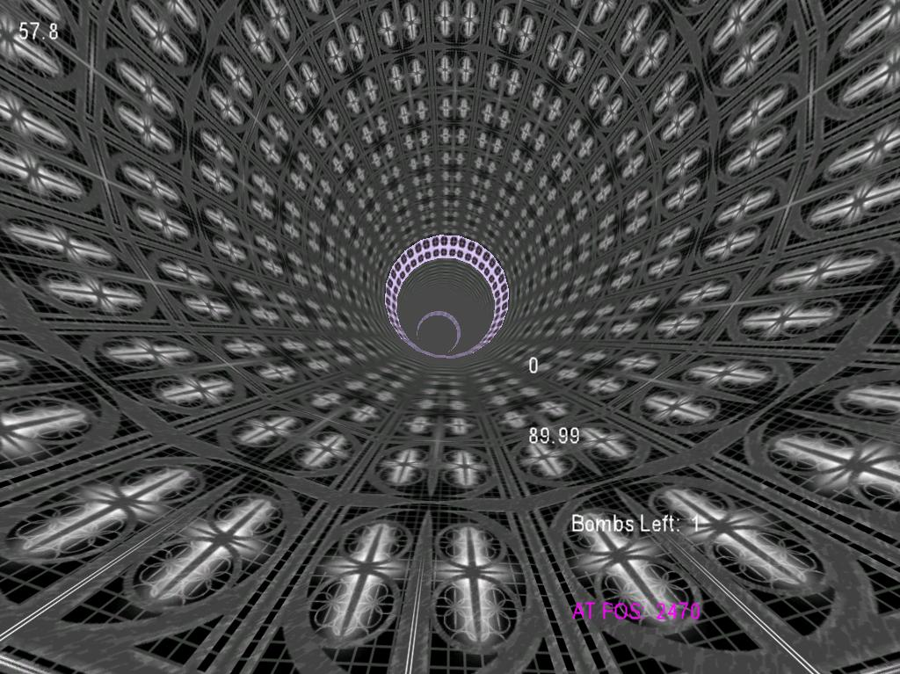

As a follow up to the simple tri-strip and terrain project, we spent the rest of this awesome class at RIT creating a 3D game of our choice. Obviously, this was a blast. I ended up taking the reigns on the project since I had been working on game engines earlier that academic year.The idea was to create a 3D Tunnel Racing game similar to an old but still awesome game called Ballistics.

Some cool things we did with our game: We created our levels as sets of Direct3D meshes manually in 3DSMax. One mesh was a visual tube that we rendered for the user. The second mesh was a clone of the visual tube but it was invisible and had a smaller tube radius. The radiai of the second tube mesh were then used at load time to generate the invisible track that a racer would drive on. The third mesh was a bunch of buildings and landscapes for our "outdoor" parts of the game. Basically, we turned 3DSMax into our level builder without any retooling. Awesome. We skewed the POV angle of the camera as the racer sped up, just like in Ballistics. We implemented simple collision detection and created a "defuse the bombs by running into them" mode. We used sound well, kind of got multitexturing to work (see below), mipmapping, bump mapping, and high resolution textures. We got to play with some advanced math for what we called our "tube physics" We actually had a semi-fun game after only 2 months of class work!
Some challenges we faced and lessons we learned:
- The D3D .mesh format we used was fine for basic geometry, but it was useless for exporting material information at all. Exporting multiple sets of UV coordinates was impossible, which limited our options for multitexturing.
- It was really hard to get 3DSMax to give us consistent output for our invisible track, which led to some buggy parts in the level. The racer would start moving really slowly at some points in a track. This was due to 3DSMax randomly increasing the # of radiai in the invisible track, which threw off our simple level logic at load time.
- Game development is time consuming and requires commitment. Flaky students who want to get an easy A should go take underwater basket weaving instead. Or at least stay out of my project groups.
- Getting textures to look right takes a long time.
- Materials are very important in general, and they are impossible to get right without serious forethought into how they are going to be created and loaded for rendering.
Unfortunately, I was busy starting another big game project during the presentation of the final game and, amidst the chaos, I forgot to email myself the game's source or even some decent screenshots. Oy! It's no big deal - the project was a big hack-job anyway.